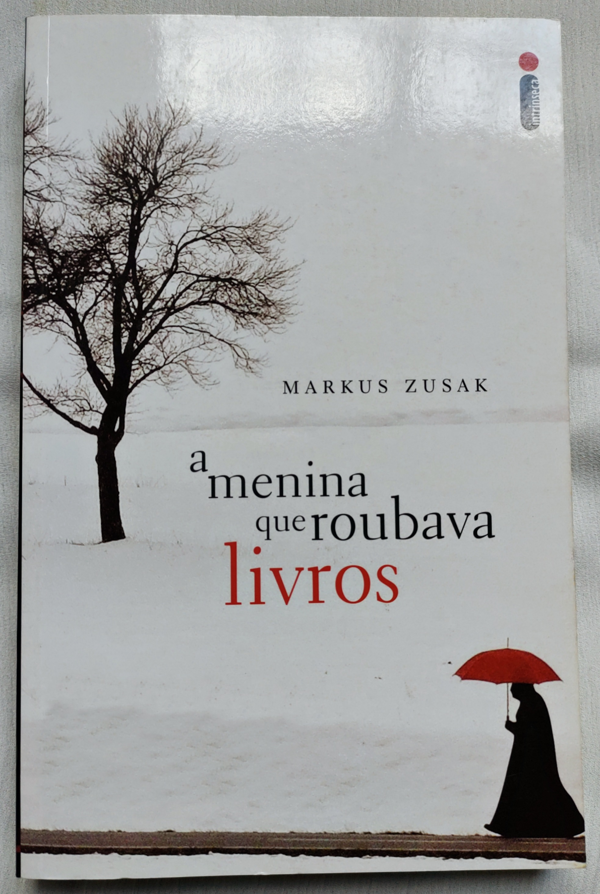
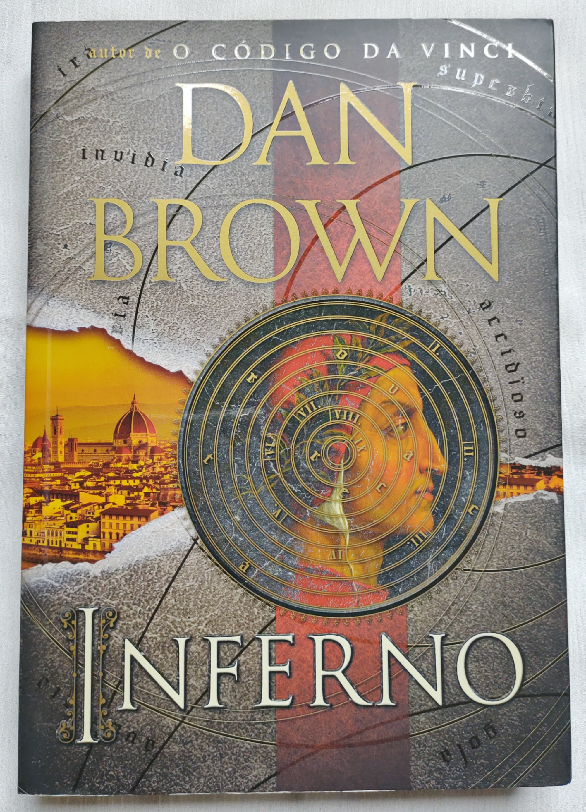
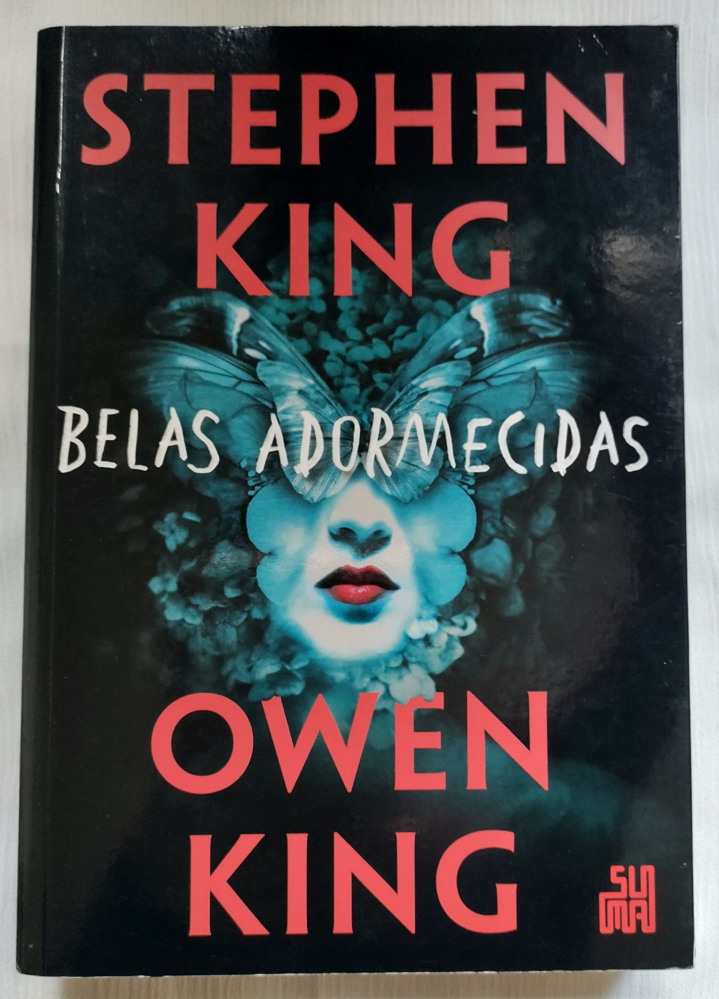
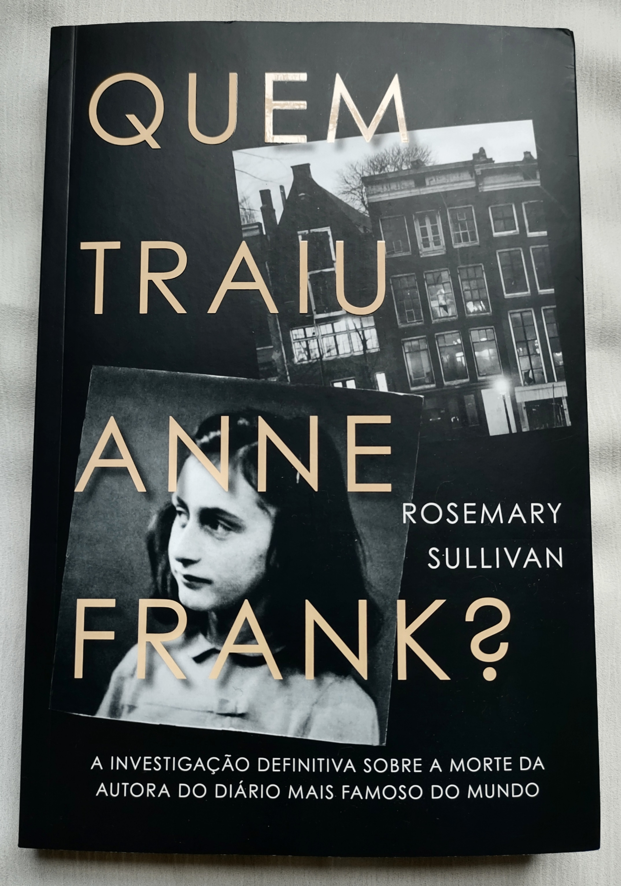

-
As espiãs do dia D
Na fúria expansionista do Terceiro Reich, a França é tomada pelas tropas de Hitler.
Os alemães ignoram quando e onde, mas estão cientes de que as forças aliadas planejam libertar a Europa.
Para a oficial inglesa Felicity Clairet, nunca houve tanto em jogo. Assim, a dias da invasão pelos Aliados, não há meta mais importante que inutilizar a maior central telefônica da Europa, alojada num palácio na cidade de Sainte-Cécile. Quando Felicity e o marido, um dos líderes da Resistência francesa, tentam um ataque direto, Michel é baleado e seu grupo, dizimado.
Abalada pelas baixas sofridas e com sua credibilidade posta em questão por seus superiores, a oficial recebe uma última chance. Ela tem nove dias para formar uma equipe de mulheres e entrar no palácio sob o disfarce de faxineiras.
Arriscando a vida para salvar milhões de pessoas, a equipe Jackdaws tentará explodir a fortaleza e aniquilar qualquer chance de comunicação alemã – mesmo sabendo que o inimigo pode estar à sua espera.
Autor: Ken Follett -
A viúva
Ao longo dos anos, Jean Taylor deixou de contar muitas coisas sobre o terrível crime
que o marido era suspeito de ter cometido. Ela estava muito ocupada sendo a esposa perfeita, permanecendo ao lado do homem com quem casara enquanto convivia com os olhares acusadores e as ameaças anônimas.
No entanto, após um acidente cheio de enigmas, o marido está morto, e Jean não precisa mais representar esse papel. Não há mais motivo para ficar calada.
As pessoas querem ouvir o que ela tem a dizer, querem saber como era viver com aquele homem. E ela pode contar para eles que havia alguns segredos. Afinal, segredos são a matéria que contamina (ou preserva) todo casamento.
Autor: Fiona Barton -
A menina que roubava livros
Uma mãe comunista, perseguida pelo nazismo, envia seus dois filhos para o subúrbio
pobre de uma cidade alemã, onde um casal se dispõe a adotá-los por dinheiro. O garoto morre no trajeto e é enterrado por um coveiro que deixa cair um livro na neve.
É o primeiro de uma série que a menina Liezel vai surrupiar ao longo dos anos. O único vínculo com a família é esta obra, que ela ainda não sabe ler.
Ela compensa o medo e a solidão das noites com a conivência do pai adotivo, um pintor de parede bonachão que lhe dá lições de leitura. Alfabetizada sob vistas grossas da madrasta, Liesel canaliza urgências para a literatura.
A trajetória de Liesel Meminger é contada por uma narradora mórbida, surpreendentemente simpática. Ao perceber que a pequena ladra de livros lhe escapa, a Morte afeiçoa-se à menina
e rastreia suas pegadas de 1939 a 1943.
Autor: Markus Zusak -
Sonho febril
Quando o falido capitão Abner Marsh recebe uma oferta de sociedade de um rico
e sinistro aristocrata chamado Joshua York, ele até chega a desconfiar que algo está errado. Mas nada que a possibilidade de receber milhares de dólares em ouro e construir o barco dos seus sonhos não possa fazê-lo mudar de ideia.
Assim surge o Sonho do Fevre, o melhor e mais potente barco de todo o Mississipi.
Uma embarcação magnífica que, ao navegar pelo rio, vai deixando pelo caminho uma coleção de histórias sombrias. Movido pela força do vapor, o Sonho do capitão pode se transformar no maior pesadelo da humanidade.
Autor: George R R Martin -
O segredo dos corpos
Devoto da ciência, o Dr. Vincent Di Maio é um dos mais renomados médicos forenses dos EUA, e ele resolveu dividir tudo o que aprendeu com os mortos em seu livro.
Ler O SEGREDO DOS CORPOS é como estar dentro do necrotério, participando de uma verdadeira aula sobre patologia criminal. Sem o inconveniente cheiro do formol.
O SEGREDO DOS CORPOS disseca casos surpreendentes que ajudaram a construir a reputação do legista. Conheça a história da medicina legal, as curiosidades de uma profissão que aparenta ser tão mórbida e sombria, e as razões que levam alguém a dedicar toda sua vida a pesquisar os mortos.
Autor: Ron Franscell -
Inferno
No meio da noite, o renomado simbologista Robert Langdon acorda de um pesadelo, um hospital. Desorientado e com um ferimento à bala na cabeça, ele não tem a menor ideia de como foi parar ali. Ao olhar pela janela e reconhecer a silhueta do Palazzo Vecchio, em Florença, Langdon tem um choque. Ele nem se lembra de ter deixado os Estados Unidos.
Quando um novo atentado contra a sua vida acontece dentro do hospital, Langdon se vê obrigado a fugir e, para isso, conta apenas com a ajuda da jovem médica Sienna Brooks.
De posse de um macabro objeto que Sienna encontrou no paletó de Langdon, os dois têm que seguir uma série inquietante de códigos criada por uma mente brilhante, obcecada por uma das maiores obras-primas literárias de todos os tempos:
A Divina Comédia, de Dante Alighieri.
Autor: Dan Brown -
Belas adormecidas
Pelo mundo todo, algo de estranho começa a acontecer quando as mulheres adormecem: elas são imediatamente envoltas em casulos. Se despertadas, se o casulo é rasgado e os corpos expostos, as mulheres se tornam bestiais, reagindo com fúria cega antes de voltar a dormir.
Sozinhos e desesperados, os homens se dividem entre os que fariam de tudo para proteger as mulheres adormecidas e aqueles que querem aproveitar a crise para instaurar o caos.
Em diversas partes do mundo guerras parecem prestes a eclodir. Mas na pequena cidade de Dooling as autoridades locais precisam lidar com o único caso de imunidade à doença do sono: Evie Black, uma mulher misteriosa com poderes inexplicáveis.
Autor: Steven king e Owen King -
O fio do bisturi
Para David Ransom, o caso já começou encerrado. Má prática médica. Como advogado da família em luto, ele vai condenar a anestesista Kate Chesne por negligência.
Mas ela invade seu escritório e o desafia a buscar a verdade. Afinal, sabia que estava sendo usada. Quando os corpos de um médico e de uma enfermeira são encontrados com os pescoços lacerados, David começa a dar crédito para Kate.
Um assassino anda à solta entre os pacientes e a equipe do hospital.
Autor: Tess Gerritsen -
Sem coração
Muito antes de Alice cair no buraco do coelho… E antes das rosas serem pintadas de vermelho… A Rainha de Copas era só uma garota vivendo seu primeiro amor.
Catherine era uma das garotas mais desejadas do País das Maravilhas e a favorita do ainda solteiro Rei de Copas, mas seus interesses eram outros. Por seu talento na cozinha, ela só queria abrir uma confeitaria em sociedade com sua melhor amiga e oferecer ao Reino de Copas os mais deliciosos doces e bolos. Porém, de acordo com sua mãe, era uma ideia inaceitável para a jovem que poderia ser a próxima rainha. Em um baile real em que o rei pretende pedi-la em casamento, Cath conhece Jest, o belo e misterioso bobo da corte.
Pela primeira vez, sente a força da pura atração. Mesmo correndo risco de ofender o rei e contrariar os pais, ela e Jest iniciam um relacionamento intenso e secreto. Mas em uma terra repleta de magia, loucura e monstros, o destino tem outros planos...
Autor: Marissa Meyer -
Quem traiu Anne Frank?
O mistério que durou gerações será revelado: quem entregou Anne Frank e sua família?
Emocionante e com um final surpreendente, Quem traiu Anne Frank? traz o relato inédito da meticulosa investigação forense comandada pelo ex-agente do FBI Vincent Pankoke para solucionar esse mistério, trazendo a resposta definitiva à pergunta que inquietou milhões de pessoas no mundo inteiro.
Autor: Rosemary Sullivan